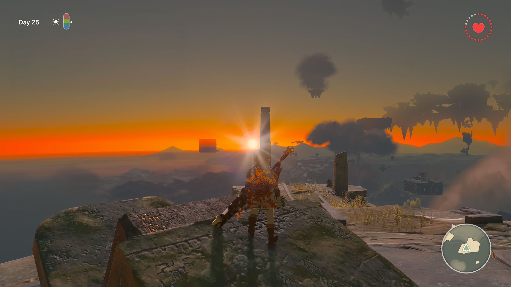
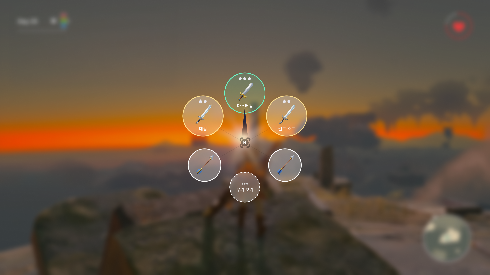
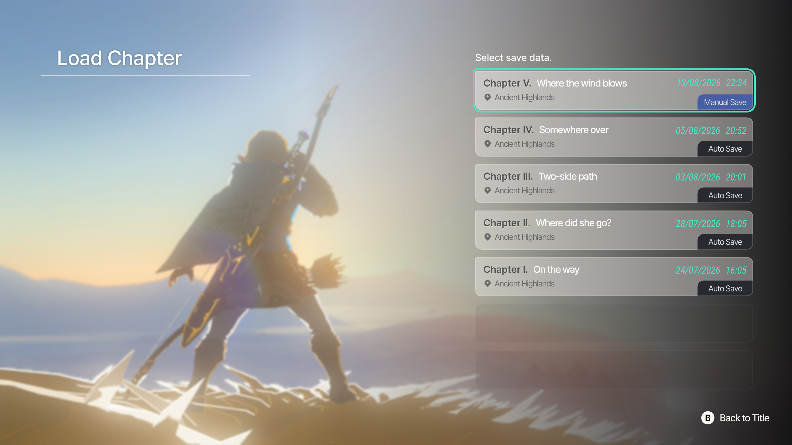

01 — Game HUD
기본 플레이 화면 - 최소 정보 구조 중심
오픈 월드 특성상 언제든 전투 ・ 기후 변화가 발생하므로, 체력과 시간, 그리고 기온을 상시 노출하도록 합니다.
미니맵은 우하단에 고정하고, 화면 중앙은 완전히 비워 플레이어의 시야를 확보합니다.
Project 03 — Game UI Design
카툰풍 JRPG의 HUD, 챕터, 컷씬 3종 화면을 디자인하였습니다.
정보 최소화와 시각적 조화를 중심으로
플레이어 몰입을 방해하지 않는 UI 구조를 목표로 했습니다.
오픈 월드 특성상 언제든 전투 ・ 기후 변화가 발생하므로, 체력과 시간, 그리고 기온을 상시 노출하도록 합니다.
미니맵은 우하단에 고정하고, 화면 중앙은 완전히 비워 플레이어의 시야를 확보합니다.
시간 흐름・기온이 캐릭터 상태에 직접 영향을 주기 때문에, 눈의 흐름 상단에 배치해 빠른 확인이 가능하게 합니다.
오픈 월드 특성상 상시 표시하고 크게 배치합니다. 돌발 전투 상황에서 즉각적으로 인지 가능하게 합니다.
전투・대화 중 가장 방해가 적은 코너에 배치합니다. 필요 시 확인할 수 있고, 평시엔 시야 밖에 위치합니다.

배틀 도중 무기를 선택하는 메뉴입니다. 시스템 상에서 몹에 따라 사용하기 좋은 추천 무기를 3가지를 강조하고,
플레이어가 추가로 선택할 수 있는 “전체 무기 보기” 선택지도 함께 제공합니다.
시간 슬로우 화면에 진입, 방사형 메뉴가 전개 됨.
현재 상황의 기온, 지형, 근접 적 속성을 읽어서 추천 슬롯 3개를 자동 선정하고 강조함.
추천 슬롯(녹색 황색 강조) + 나머지 일반 슬롯을 동시에 노출. 플레이어가 스틱으로 자유롭게 선택.
강조된 3개 중 하나를 스틱으로 선택하면 즉시 장착.
스틱 아래 방향→전체 무기 그리드로 확장
플레이어가 수동으로 선택 가능.
추천 외 일반 슬롯도 그대로 선택 가능하며, 추천 시스템이 선택지를 막지 않음.
메뉴 닫기. 기존 장착 무기 유지. 어떤 상태에서도 즉시 탈출 가능하게 설계.

장소, 날짜, 저장 유형을 한 줄에 정리한 목록형 레이아웃입니다.
가장 최근 세이브를 강조해서 사용자 시선을 자연스럽게 유도하였습니다.
챕터명(대)→장소(소) 순으로 정보 계층을 명확히 분리하였습니다.
Manual Save/Auto Save를 구분하였습니다. 최신 수동 저장은 청색으로 강조하였습니다.
반투명 패널로 게임 아트를 배경에 살려 게임 세계관 맥락을 유지하였습니다.

대화창을 하단 투명 패널로 처리하고, UI를 절제해 아트가 주역이 되도록 설계하였습니다.
화자 이름과 대사를 분리 표기해서 가독성을 확보하였습니다. 버튼 프롬프트를 우하단 소형으로 배치하여 조작 가독성을 높였습니다.